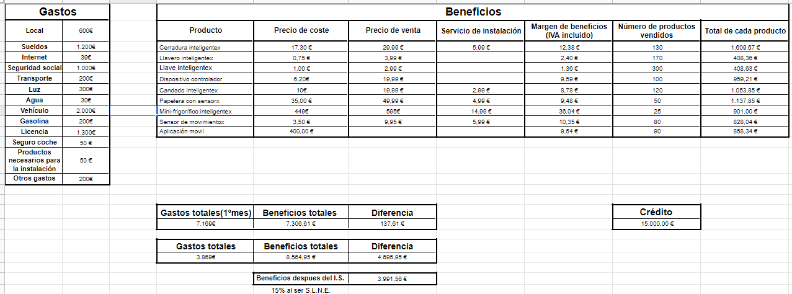

SecVrity es un proyecto de empresa que basa su actividad en la venta de productos y servicios relacionados con la electrónica y la seguridad, combinando ambas características, para lograr que la calidad de los productos sea la mejor posible.
El proyecto de empresa de SecVrity comenzaría con la apertura de una tienda física situada en una zona estratégica de Coruña, en la que poder dar soporte físico a los clientes y poder solucionar los posibles problemas que hayan tenido con los productos o servicios. Además de esto, también se abriría una página web con tienda online en la que podremos dar soporte online a nuestros clientes y mandar nuestros productos cualquier parte del mundo.
La base de nuestra empresa es la venta de productos y servicios relacionados con la electrónica y la seguridad, combinando ambas características en cada producto y servicio de nuestra empresa. En Coruña existen diversas empresas relacionadas con la seguridad o con la electrónica, pero la gran mayoría de estas empresas no combinan las dos características anteriores como pretendemos combinarlas nosotros. El público objetivo de nuestra empresa; en un principio; son personas que adultas que tengan en propiedad o alquilada una vivienda en la que puedan instalar nuestros dispositivos.
La estrategia se basaría en una publicidad con carteles y algunos anuncios en radio enfocándose en los problemas que puede tener la falta de seguridad en la actualidad y lo rentable que llega a ser invertir por estar seguro. Una vez la empresa obtenga más beneficios la idea es expandirnos con más locales por toda Galicia y España en general empezando por grandes ciudades como Barcelona, Madrid o Málaga. También estaría incluido en este paso la posibilidad de envios a otras partes del mundo como latinoamérica, la compra definitiva de los locales en lugar de alquilarlos o la adquisición de almacenes y oficinas.
Debilidades: Relativa dificultad para atraer al público.
Amenazas: Posibilidad de no vender lo esperado generando pérdidas, ya que estamos en un mercado de innovación, los cuales suelen ser muy irregulares.
Fortalezas: Es un plan de negocio con un posible crecimiento a medio plazo, gracias a que es una idea basada en la innovación y las oportunidades del futuro.
Oportunidades: La seguridad y más en relación a la tecnología es un sector en crecimiento y muy importante en el presente y futuro de la sociedad.
En la sigueiente imagen, se puede una proyección de los resultados esperados de la empresa. En la imagen aparecen las cuentas de la empresa en las que se muestran los productos que se esperan vender a parte de todos los gastos que tendría SecVrity(luz, empleados, internet, agua, gasolina,...
